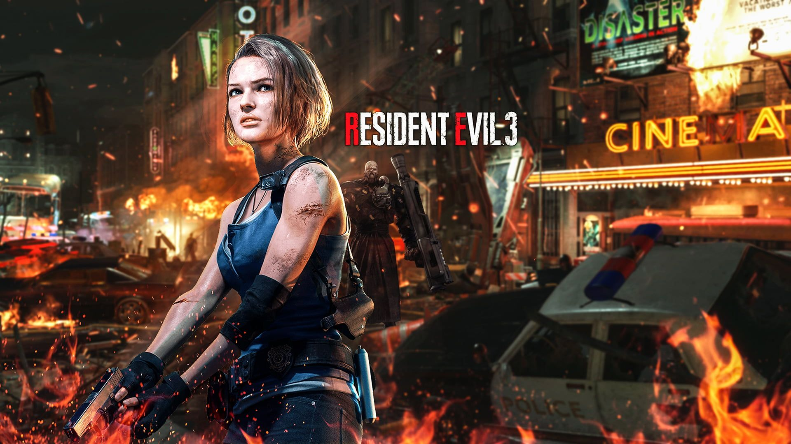

Чо эта
Эта комплюхтерная игра в жанре survival horror, ремейк оригинальной игры Resident Evil 3: Nemesis, выпущенной в 1999 году. Разработана и издана компанией Capcom
Системки
ОС: Windows 7, 8.1, 10 (64-бит).
Процессор: Intel Core i5-4460 или AMD FX-6300.
Оперативная память: 8 ГБ.
Свободное место: 45 ГБ.
Видеокарта: NVIDIA GTX 760 или AMD Radeon R7 260x (2 ГБ).
DirectX: 11.
